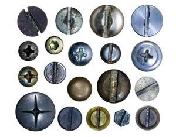
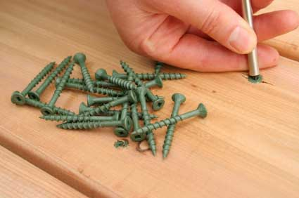
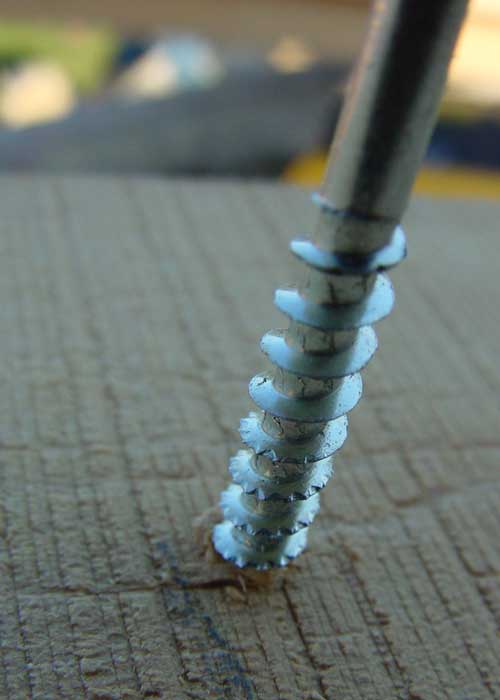
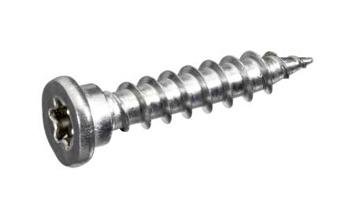
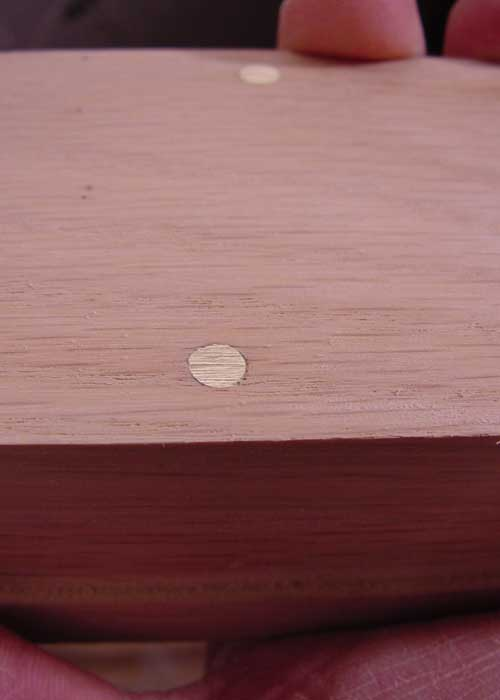
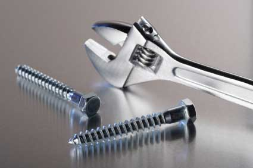
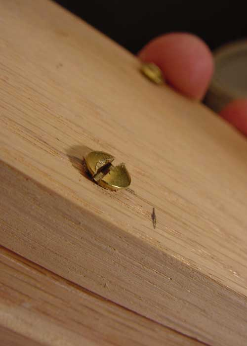

Wood Screws: Best Uses For The Best Types
You can build sturdy, attractive furniture if you choose the right wood screws.
By Steve Maxwell
October 15, 2009
Furniture isn’t what it used to be, and that’s not necessarily a bad thing. Look closely at many old dressers, tables, cabinets and shelves, and you’ll see a whole lot of interlocking joints. Traditionally, intricate, hand-wrought mechanical connections were necessary to supplement weak glues and simple nails. But today, there’s a simpler way, and it all revolves around choosing the right types of wood screws (screws made of metal used to join wood, not screws made of wood) and hardware that works with them.
Metal wood screws are superior to nails because they have threads instead of being smooth like most nails. This lets them grip surrounding wood with much more power, offering greater strength than nails. Wood screw threads are so effective they draw the two halves of a joint together tightly, eliminating the need for clamps in a way that nails can’t match. Combine screws and glue and you’ll have an amazingly strong wood joint. And because screws are installed with twisting action delivered by a drill or hand driver, you get none of the destructive pounding that comes with hammer-driven nails.
You don’t need to be an experienced artisan to make great, basic furniture with modern wood screws. One reason is that wood screws are much better and cheaper than ever. Screws have now become so strong, effective and available, that they allow ordinary folks to build serviceable, attractive and simple furniture. It’s a quiet revolution. Choose the right kind of screws and accessories, and you’ll be able to create beautiful woodworking joints in minimal time. And because you can remove screws easily and reinstall them, they offer the grace necessary to take several runs at woodworking success before you get it right. The key is understanding the hardware that’s available and how to use it. And it all starts with a look at the screws themselves.
Screws and Washers
Not all wood screws are created equal. They might look the same at a casual glance, but key design refinements and differences matter. Mail-order specialty suppliers (Lee Valley Tools is my favorite) are the best places to find the world’s greatest screws without having to travel all over the planet. Ordinary hardware-store deck screws are fine for many applications, but to get optimal results you need a better-than-average screw.
Premium wood screws are sold under various brand names (my current favorite is Spax), and all offer a similar virtue: much better threads. You can tell simply by looking closely at them. The threads are thin and sharp with serrated tips. This gives them the ability to chisel through wood, letting the screws burrow into wood with little or no splitting. It’s even possible to drive them into some kinds of hardwoods without predrilling. The difference between ordinary deck screws and premium screws is amazing.
No matter how easily screws are installed, or how well they hold, there’s still the problem of aesthetics. Wood screw heads are rather homely, at least on their own. And countersinking (making a slightly larger hole, so the head of the screw goes beneath the surface of the wood) doesn’t help much either. What you need are better heads.
The easiest and least expensive option for improving the appearance of bare screw heads involves something called cup washers. Imagine a bagel sliced in half before you slather on cream cheese. That’s like a cup washer. Simply put one on a screw shank - domed side facing up - then install the screw as normal. The flathead of the wood screw nestles into the hole in the bagel, looking a lot better than it would alone. Cup washers look best with Phillips, slot and Torx-head screws, though regardless of the type of fastener you drive, there’s another benefit. Cup washers spread pressure over a much larger area than the screw head alone, creating a wood joint that’s stronger because the screws have so much more surface area to rest on. You’ll find cup washers designed for all the usual wood screw sizes (#8, #10 and #12 are most common), and available in chrome or brass. Most cup washers are hollow. The very best are made of solid brass.
The only problem with cup washers is the way they sit slightly above the wood surface. It’s a little too informal for some situations. Brass countersunk washers, on the other hand, are a more refined option that allows flathead wood screws to sit flush with surrounding wood, while eliminating the frazzles and informality of countersinking directly into wood alone. You’ll need to drill pockets of precise size and depth to contain countersunk washers, but they look gorgeous with brass slot-head screws.
How to Hide Screw Heads
Sometimes hiding screw heads completely is best, and for this approach you can’t beat tapered wooden plugs. Buy them ready made or cut your own using a simple tool for the drill press. Don’t settle for ordinary cylindrical plugs, because they don’t work nearly as well. Tapered plugs are more forgiving. They snug themselves into holes quite nicely, even if they’re a little larger or smaller than they’re supposed to be.
Start by installing screws into counterbored pockets sized to fit the plugs you’ll install. Most tapered wooden plugs require a half-inch hole, followed by an eighth-inch diameter hole for the screw shank. With screws installed, daub a small amount of glue around the inside of the plug hole with a toothpick, then insert a plug. One nice thing about making your own plugs is you can use scraps from the same boards used to build your project. Align the growth rings of these plugs with the rings of the surrounding wood and the plug will nearly disappear after sanding and finishing.
If you’re using ready-made plugs, be aware that there are two types. End-grain plugs are the most common, with growth rings showing up on the top of the plug. Use these when you want plugs to appear as a prominent visual feature in your work, especially if you’ll be staining. Edge-grain plugs, on the other hand, are masters of disguise. They have the face of the board they were cut from oriented upwards, where they’ll be seen. This lets them blend into the surrounding wood almost as well as plugs you mill yourself.
Butt Joint Basics
Almost all wood screws are used to bring simple butt joints together, and the results can be stronger than you think. You can create perfectly serviceable tables, benches, birdhouses - even chairs and desks. Regardless of where you use them, woodscrew butt joints look best if you offset the ends of adjoining parts a bit in the finished product. You’ll find a sixteenth-inch to eighth-inch offset is ideal for smaller projects. Up to a quarter inch is best for large projects. Round the protruding ends of the joint with sandpaper or a rasp before assembly for best results.
Three Types of Wood Screws to Choose
Fastening table legs to surrounding skirts? Securing knee braces on a post and beam structure? Anchoring a shelf under a workbench? Lag bolts are your answer. Despite their name, these aren’t bolts at all - at least not where it counts. They’re just big screws, though they do have a hex-shaped bolt head. Drive them with a socket wrench.
Ordinary deck screws are the cheapest option you’ll find, offering excellent performance in general applications. Premium wood screws look like regular deck screws, except for a few key features. Serrated threads greatly reduce the tendency to split wood, and the best include a dual head design that accepts both Robertson and Phillips drivers.
Brass screws are classier than deck screws and lag bolts, but you need to be careful. Even the best brass screws are quite soft compared with steel ones. Predrilling proper-sized pilot holes that are only slightly smaller than brass screw threads is key, especially in hardwood. If it takes more than a moderate amount of torque to drive a brass screw, stop and enlarge the pilot hole. Even if the screw shank doesn’t break (and it probably will), the head will probably be mangled as your screwdrivers slips.
Brass with Class
Brass pinned joints offer an exceptional option for joining wooden parts easily and beautifully, and it all starts with traditional flathead brass screws, the kind with a slot cut in the top for driving them. This type of screw head is designed for installation into predrilled and countersunk holes, but that’s not what you’ll do in this instance. Instead, after drilling a hole for the screw shank and threads, countersink a shallow pocket just half the depth required to contain the screw head. Your aim is to have the bottom of the driving slot sitting slightly higher than the surface of the wood because you grind the head of the screw flat so that there’s no longer a slot in the screw head.
Use a hand-held belt sander with an 80-grit sandpaper to level off the brass screw head so it’s even with the surrounding wood. Brass is soft, so leveling happens easily. Just be careful of heat. Lift the sander off the screw head after every couple of seconds of contact, to let the metal cool. There are never any sparks during this operation, but the brass will get hot enough to char the surrounding wood if you don’t allow cooling time. After the screw has been leveled, sand the entire surface as you would normally, then apply a finish. Few things look as nice as a brass pinned joint, especially over darker shades of wood, such as walnut or cherry.
Simple, sturdy furniture you successfully make yourself. It’s never been easier to produce great woodworking projects, so what are you waiting for? A pouch full of the right kind of screws and accessories will help you build like a pro.
For more information on choosing metal fasteners, read The Nuts & Bolts of Nails, Screws and More.
Do you have a favorite technique for using metal wood screws? Tell us about your experience in the comments section below.
|
 ISTOCKPHOTO/JAKUB KRECHOWICZ Select a certain type of wood screw to create the right “look” for your project. |
 ISTOCKPHOTO/ROBERT COCQUYT You’ll need a Robertson (square tip) or Phillips driver for deck screws. |
 STEVE MAXWELL The tips of premium wood screw are serrated to chisel through wood with minimal splitting of the wood. |
 ISTOCKPHOTO/TONY COLTER Cup washers can dress up screw heads. They also make joints stronger. |
 ISTOCKPHOTO/ACHIM PRILL Torx-head screws have a six-point pattern in the heads. |
 STEVE MAXWELL Install wooden plugs into countersunk holes to hide screw heads. These plugs have already been sanded flush with the surface of the board. |
|
 ISTOCKPHOTO/PAUL TESSIER Lag bolts (or lag screws) are driven with a wrench. |
 STEVE MAXWELL Brass screws are softer than screws made of other metals. |
|